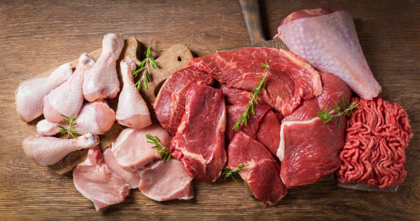

Meat & Poultry

-
Carbohydrate Content: Meat and poultry are naturally carb-free,
making them staples in low-carb and ketogenic diets.
-
Processed Meats: Some processed meats, like sausages or deli
meats, may contain small amounts of carbs due to added fillers or
sugars.